第一章 丰富的图形世界（高效培优单元测试·强化卷）
（考试时间：120分钟 试卷满分：120分）
一、选择题（本大题共10小题，每小题3分，共30分）
1．如图所示是一款茶叶的包装盒，它对应的立体图形的名称是（ ）

A．圆柱 B．长方体 C．五棱柱 D．六棱柱
【答案】D
【分析】本题考查了立体图形的认识，底面是六边形的柱体是六棱柱，据此即可作答．
【详解】解：结合茶叶的包装盒，得出底面是六边形的柱体，
∴它对应的立体图形的名称是六棱柱，
故选：D
2．如图，将直角三角形 绕直角边
绕直角边 所在直线旋转一周，得到的几何体是（ ）
所在直线旋转一周，得到的几何体是（ ）

A．圆柱 B．球 C．四棱柱 D．圆锥
【答案】D
【分析】本题考查了点、线、面、体，根据直角三角形绕直角边旋转是圆锥，可得答案．
【详解】解：将一个直角三角形绕它的一条直角边旋转一周得到的几何体是圆锥．
故选：D．
3．一个正方体的展开图如图所示，把它折叠成正方体后，有“的”字一面的相对面上的字为（ ）

A．我 B．中 C．国 D．梦
【答案】C
【分析】本题考查了正方体表面展开图，根据特点作答即可．
【详解】A、“我”字一面的相对面上的字为“梦”，不符合题意；
B、“中”字一面的相对面上的字为“梦”，不符合题意；
C、“的”字一面的相对面上的字为“国”，不符合题意；
D、“梦”字一面的相对面上的字为“我”或“中”，不符合题意；
故选：C．
4．如图，该几何体从左面看得到的图形为（ ）

A．
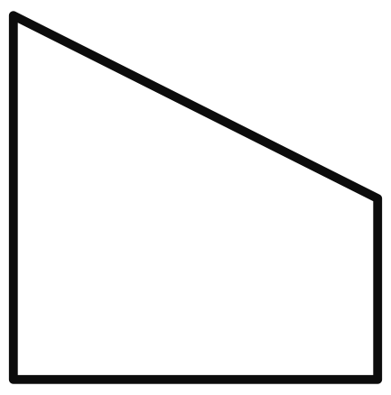
B． C．
C．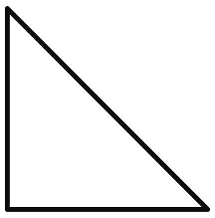
D．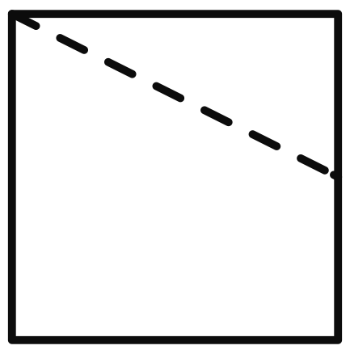
【答案】D
【分析】本题考查从不同方向看几何体，注意看得到的棱画实线，看不到的棱画虚线．根据从左边看得到的图形是含有虚线，可得答案．
【详解】解：从左面看，可得选项D的图形．
故选：D．
5．下列图形经过折叠可以围成一个完整的正六棱柱的是（ ）
A． B．
B．
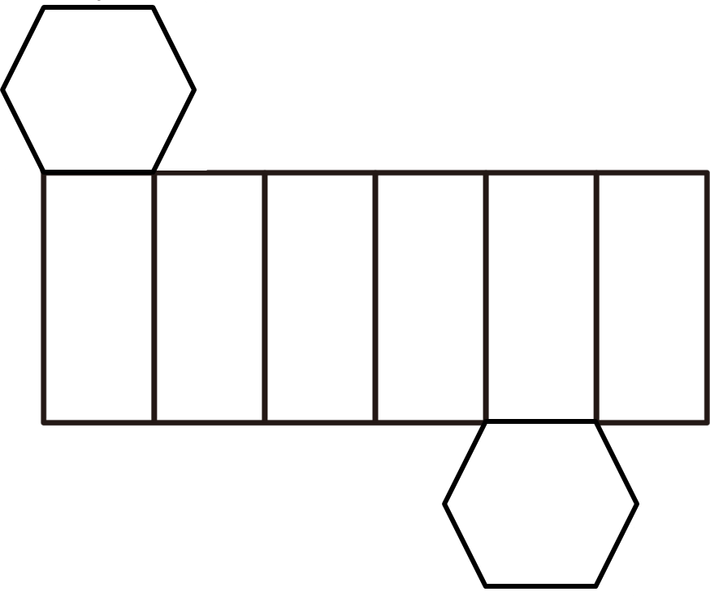
C． D．
D．
【答案】B
【分析】本题考查几何体的展开图．熟记常见的几何体的展开图，是解题的关键．根据正六棱柱的展开图即可解答．
【详解】解：A、能围成一个无盖的正六棱柱，不符合题意；
B、可以围成一个正六棱柱，符合题意；
C、两个底面在同侧，不能围成正六棱柱；不符合题意；
D、侧面只有五个面，不能围成正六棱柱；不符合题意；
故选：B．
6．下面图形沿虚线不能围成一个正方体的是（ ）
A． B．
B． C．
C． D．
D．
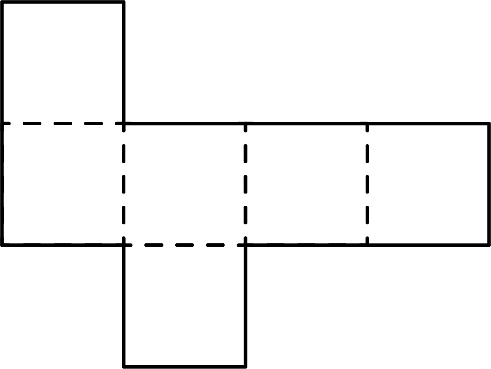
【答案】C
【分析】本题考查了正方体的展开图相关知识，判断给定图形是否符合正方体展开图的特征，进而确定能否围成正方体，核心在于对正方体展开图结构特点的理解和识别．
正方体展开图有 11 种不同的形式，可以通过对这些形式的了解来判断给定的图形能否围成正方体．
【详解】A选项：图形是“ ”型展开图，是正方体展开图的一种常见形式，通过实际折叠，可以发现能够围成一个正方体；
”型展开图，是正方体展开图的一种常见形式，通过实际折叠，可以发现能够围成一个正方体；
B选项：图形是“”型展开图，是正方体展开图的一种常见形式，通过实际折叠，可以发现能够围成一个正方体；
C选项：经过观察可以发现，它不符合正方体展开图的 11 种形式，无论怎样尝试折叠，都无法围成一个完整的正方体；
D选项图形是“ ”型展开图，是正方体展开图的一种常见形式，通过实际折叠（想象或动手操作），可以发现能够围成一个正方体；
”型展开图，是正方体展开图的一种常见形式，通过实际折叠（想象或动手操作），可以发现能够围成一个正方体；
故选：C．
7．用一个平面截一个几何体，得到的截面是矩形，则这个几何体不可能是（ ）
A． B．
B．
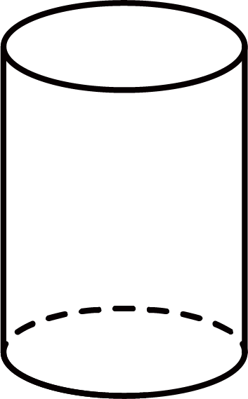
C． D．
D．
【答案】C
【分析】本题考查了几何体的截面，根据圆锥、圆柱、球体，三棱柱的几何特征，分别分析出用一个平面去截该几何体时，可能得到的截面的形状，逐一比照后，即可得到答案．
【详解】解：A. 截面可能是矩形，故该选项不符合题意；
B. 截面可能是矩形，故该选项不符合题意；
C. 截面不可能是矩形，故该选项符合题意；
D. 截面可能是矩形，故该选项不符合题意；
故选：C．
8．下列说法：①三棱锥的底面是三角形；② 棱柱有个面，
棱柱有个面， 个顶点，
个顶点， 条棱；③若直棱柱的底面边长都相等，则它的各个侧面的面积也相等；④圆锥有两个面，底面与侧面相交形成曲线；⑤时钟的秒针旋转时，形成一个圆面，这说明了点动成线；⑥如果用一个平面去截八棱柱，截面形状一定不是九边形．其中正确的有（ ）
条棱；③若直棱柱的底面边长都相等，则它的各个侧面的面积也相等；④圆锥有两个面，底面与侧面相交形成曲线；⑤时钟的秒针旋转时，形成一个圆面，这说明了点动成线；⑥如果用一个平面去截八棱柱，截面形状一定不是九边形．其中正确的有（ ）
A．3个 B．4个 C．5个 D．6个
【答案】B
【分析】本题考查了立体图形的性质，几何体的特征，截面图形的边数，解题的关键是熟练掌握几何体的定义．根据立体图形的特征，截几何体的方法进行判定是几边形．
【详解】解：①三棱锥的底面是三角形，说法正确；
②棱柱有 个面，个顶点，条棱，原说法错误；
个面，个顶点，条棱，原说法错误；
③若直棱柱的底面边长都相等，则它的各个侧面的面积也相等，说法正确；
④圆锥有两个面，底面与侧面相交形成曲线，说法正确；
⑤时钟的秒针旋转时，形成一个圆面，这说明了线动成面，原说法错误；
⑥如果用一个平面去截八棱柱，截面形状一定不是九边形，说法正确．
综上，正确的说法有①③④⑥共4个．
故选：B．
9．小丽制作了一个如图所示的正方体礼品盒，其对面图案都相同，那么这个正方体礼品盒的表面展开图可能是（ ）
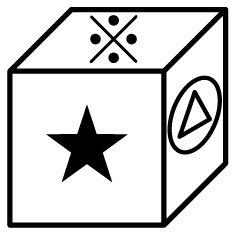
A．
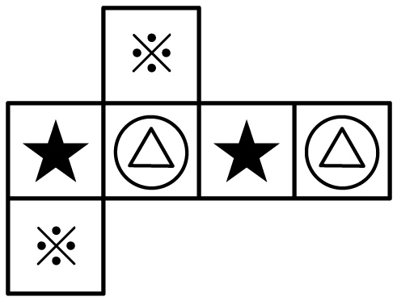
B．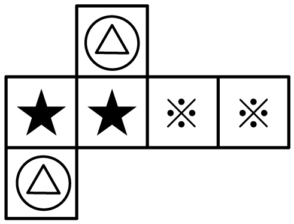
C．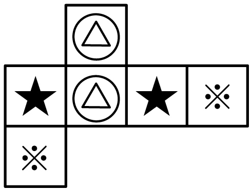
D．
【答案】A
【分析】对面图案均相同的正方体礼品盒，则两个相同的图案一定不能相邻，据此即可判断．
【详解】解：根据分析，图A折叠成正方体礼盒后，即对面图案相同；图B、图C和图D中对面图案不相同；
故选A．
【点睛】本题考查了正方体的展开图，注意正方体的空间图形，从相对面入手，分析及解答问题．
10．如图是国内某品牌牛奶长方体型包装盒的展开图（粘贴部分忽略不计），展开图的数据大小如图中所示，从该包装盒说明上知道，该牛奶含优质乳蛋白3.6克 ，则一盒这样的牛奶含优质乳蛋白（按装满计算）（ ）
，则一盒这样的牛奶含优质乳蛋白（按装满计算）（ ）

A．4.5克 B．9克 C．90克 D．900克
【答案】B
【分析】本题主要考查几何图形，包装盒体积
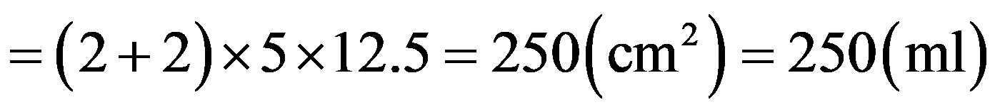
，据此即可求得答案．【详解】包装盒体积
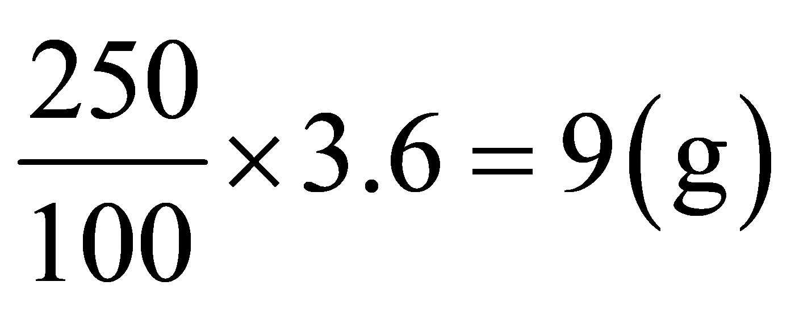
故选：B
二、填空题（本大题共6小题，每小题3分，共18分）
11．笔尖在纸上快速滑动写出了一个又一个字，从数学的角度解释为 ．（填“点动成线”或“线动成面”或“面动成体”）
【答案】点动成线
【分析】本题考查了点、线、面、体，熟练掌握点动成线，线动成面，面动成体是解题的关键．
根据点动成线解答即可．
【详解】解：笔尖在纸上快速滑动写出了一个又一个字，从数学的角度解释为点动成线．
故答案为：点动成线．
12．如图，图中柱体的个数是 个．
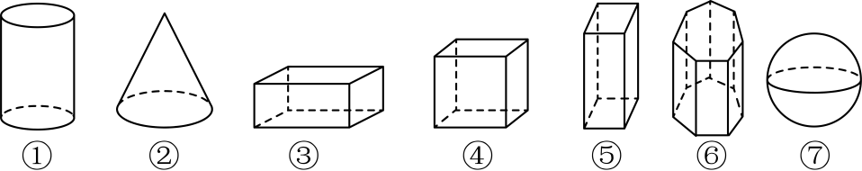
【答案】5
【分析】本题主要考查了柱体的识别，一个多面体有两个面互相平行且全等，余下的每个相邻两个面的交线互相平行，这样的多面体就为柱体，柱体分为圆柱和棱柱，据此进行判断即可．
【详解】解：柱体有①③④⑤⑥，共5个．
故答案为：5．
13．如图是某几何体从不同方向看所得图形，根据图中数据，求得该几何体的侧面积为 （结果保留 ）．
）．
【答案】
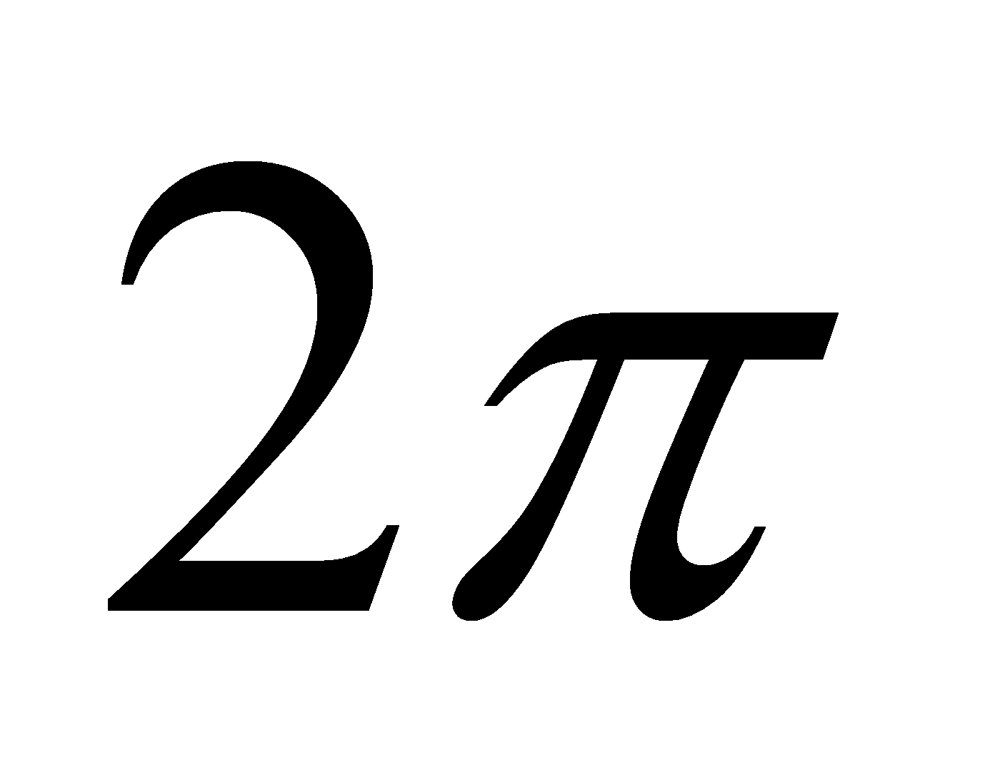
【分析】先根据几何体的三视图可判断其形状，再根据告诉的几何体的尺寸确定该几何体的侧面积即可．
【详解】解：这个几何体是圆柱，从正面看的高为2，从上面看的圆的直径为1，
∴该圆柱的底面直径为1，高为2，
∴该几何体的侧面积为
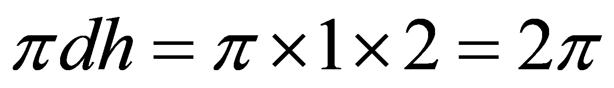
．故答案为：．
【点睛】本题考查了由三视图判断几何体及几何体的表面积问题，解题的关键是了解圆柱的侧面积的计算方法．
14．如图，纸板上有19个无阴影的小正方形，从中选涂1个，使它与图中5个有阴影的小正方形一起能折叠成一个正方体纸盒，一共有 种选法．

【答案】4
【分析】本题主要考查了正方体的展开图．解题时勿忘记四棱柱的特征及正方体展开图的各种情形．利用正方体的展开图即可解决问题，共4种．
【详解】解：如图所示：共4种．
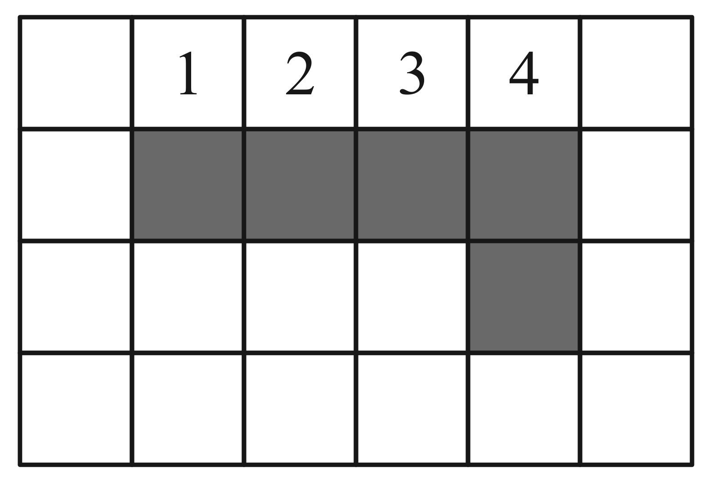
15．用小立方块搭一个几何体，下面分别是它的正面、上面看到的形状．搭成该几何体至少需要 个相同大小的小立方体．

【答案】
【分析】此题主要考查了从不同方向看几何体，同时也体现了对空间想象能力方面的考查易得这个几何体共有2层，由俯视图和主视图可得第一层、第二层最少的正方体的个数，相加即可
【详解】解：依题意，从上面看，当所需的几何体最少，则第一层有5个几何体，第二层最少有2个几何体，
搭这样的几何体最少需要 个小正方体，
个小正方体，
故答案为：．
16．一个直角三角形直角边为5，12，若以直角边所在直线为轴旋转一周所成旋转体的体积为 ．（保留π）
【答案】
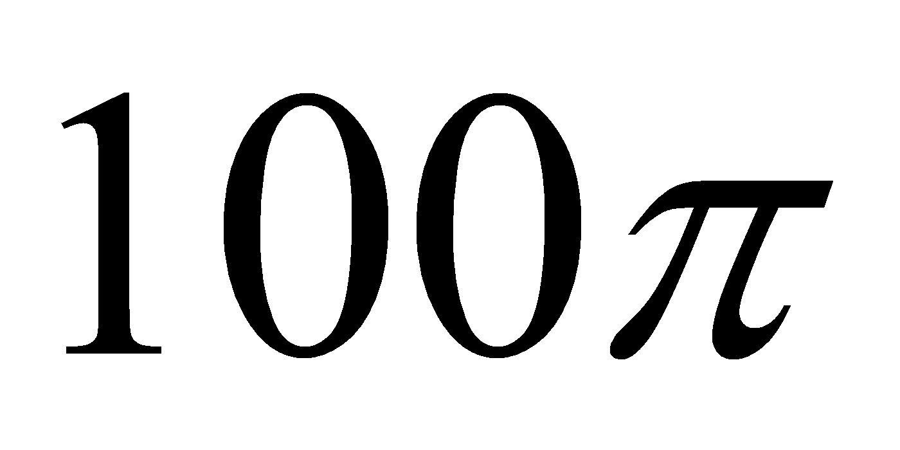
或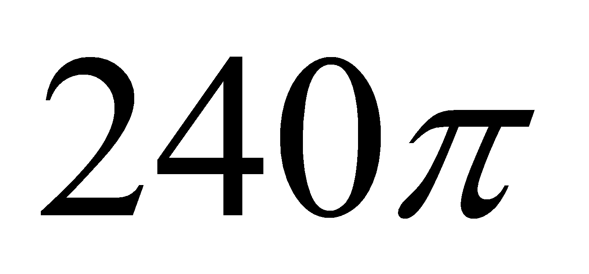
【分析】本题考查了点，线，面，体，根据题意判断出几何体的形状为圆锥，然后根据体积公式计算即可，解题的关键是掌握圆锥的体积公式．
【详解】解：由题意得，以5为直角边所在的直线为轴旋转一周得到几何体为圆锥，
∴圆锥的体积
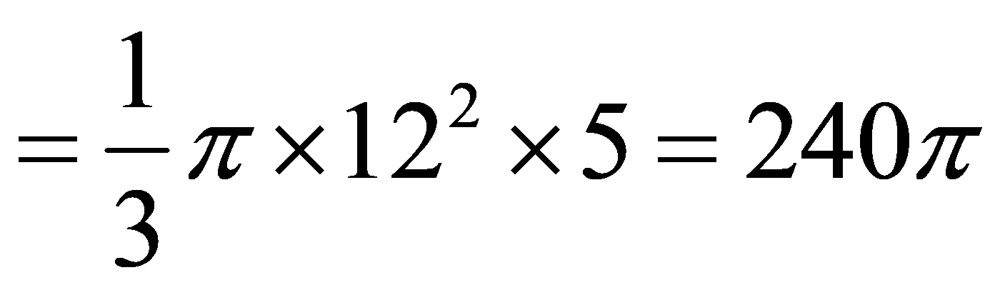
，由题意得，以12为直角边所在的直线为轴旋转一周得到几何体为圆锥，
∴圆锥的体积
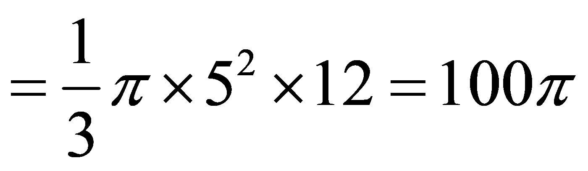
，故答案为：或．
三、解答题（第17，18，19，20题，每题6分；第21，22，23题，每题8分；第24，25题，每题12分；共9小题，共72分）
17．如图，第二行的图形绕虚线旋转一周，便能形成第一行的某个几何体，用线连一连．
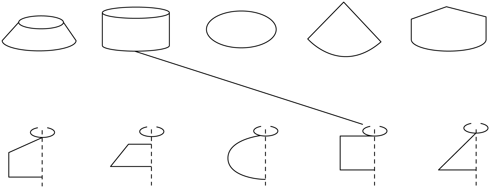
【答案】见解析
【分析】根据旋转的特点和各几何图形的特性判断即可．
【详解】解：如图所示：
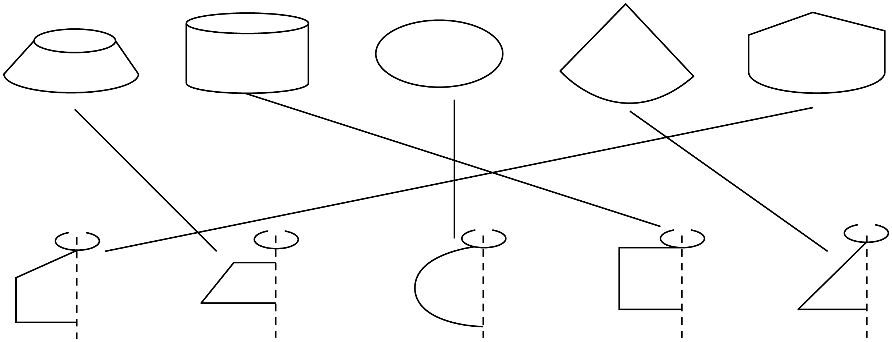
【点睛】本题考查了点、线、面、体，解决本题的关键是掌握点动成线，线动成面，面动成体．
18．如图，是由一些小正方体搭成的几何体，请画出从正面、左面、上面看到的图形．
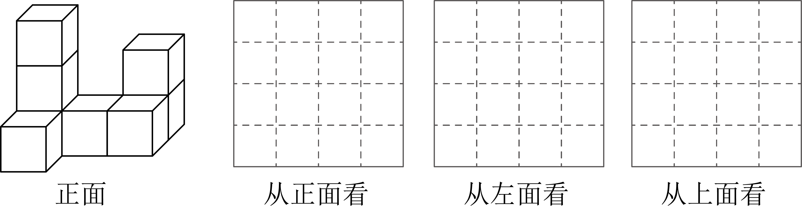
【答案】见详解
【分析】本题考查画从正面、左面、上面看简单组合体得到的图形，理解从不同方向看的定义，掌握简单组合体平面图形的画法是正确解答的前提．
根据从正面、左面、上面看到的图形分别画出各图形即可．
【详解】解：这个几何体从正面、左面、上面看到的图形分别如下图所示：
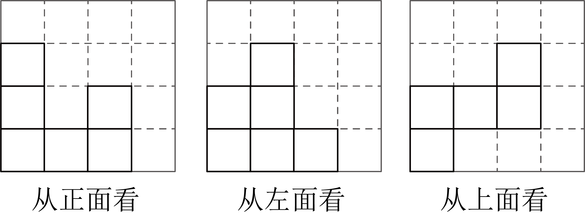
19．指出如图所示的立体图形中的柱体、锥体、球．

柱体：___________________________
锥体：___________________________
球体：___________________________（填序号）
【答案】①②⑤⑦⑧；④⑥；③
【分析】柱体的特点：有两个面互相平行且大小相同，余下的每个相邻两个面的交线互相平行； 锥体的特点：有1个顶点，一个底面，只有1条高； 篮球、足球都是球，球是由一个面所围成的几何体，据此可得答案．
【详解】解：柱体为：①②⑤⑦⑧；
锥体为：④⑥；
球体为：③．
故答案为：①②⑤⑦⑧；④⑥；③．
【点睛】本题主要考查了柱体，锥体，球体，熟练掌握柱体，锥体，球体的特点是解题的关键．
20．如图是一个食品包装盒的展开图（图中的六边形的六条边相等）．

(1)请写出这个包装盒的立体图形的名称；
(2)请根据图中所标的尺寸，求这个立体图形的侧面积．
【答案】(1)六棱柱；
(2) ．
．
【分析】（1）观察图形可知两个正六边形为立体图形的底面，六个长方形为侧面，判断即可；
（2）侧面积即图形中六个长方形的面积，已知了长方形的长和宽，根据长方形的面积公式计算即可．
【详解】（1）解： 两个正六边形为立体图形的底面，六个长方形为侧面，
两个正六边形为立体图形的底面，六个长方形为侧面，
 这个包装盒的立体图形是正六棱柱；
这个包装盒的立体图形是正六棱柱；
（2）解：六个长方形为侧面，
又∵长方形长为a、宽为b，
∴ 其侧面积为．
【点睛】本题考查立体图形的展开图，解决这类问题的关键是熟悉常见的圆椎、棱锥、圆柱、棱柱等的展开图的特点，本题中的展开图很显然是一个柱体的展开图，由于底面是正六边形，故此应该是六棱柱，同时要明确正六棱柱的侧面是6个全等的长方形，计算侧面积，只需计算6个长方形的面积即可．
21．小丽跟妈妈到银行办理业务，她发现银行大堂的旋转门内部是由三块宽为2m、高为3m的玻璃隔板组成的．此情此景，让她想起了六年级数学第一章《丰富的图形世界》里的知识，她提出了以下问题，你能帮她解决吗？
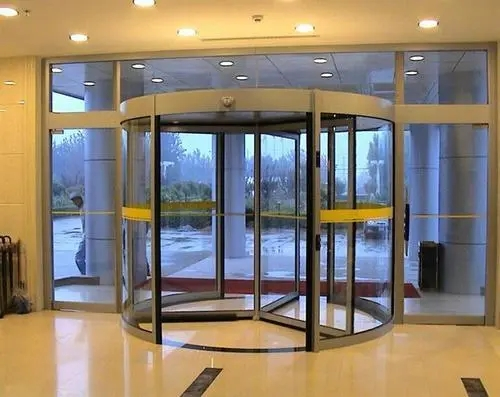
(1)将此旋转门旋转一周，能形成的几何体是______．
(2)这能说明的事实是______（选择正确的一项填入）．
A．点动成线 B．线动成面 C．面动成体
(3)求该旋转门旋转一周形成的几何体的体积．（边框及衔接处忽略不计，结果保留π）
【答案】(1)圆柱
(2)C
(3)
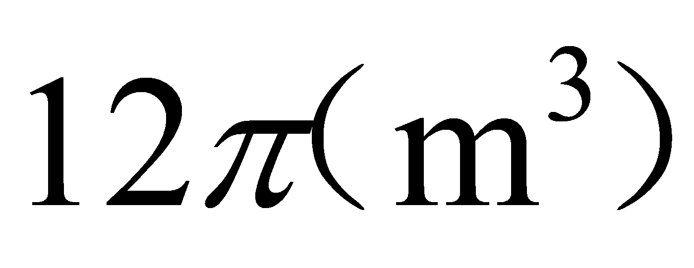
【分析】（1）旋转门的形状是长方形；
（2）长方形旋转一周，能形成的几何体是圆柱；
（3）根据圆柱体的体积＝底面积×高计算即可．
【详解】（1）解：∵旋转门的形状是长方形，
∴旋转门旋转一周，能形成的几何体是圆柱，
（2）这能说明的事实是面动成体．
故选： C．
（3）该旋转门旋转一周形成的几何体是圆柱，
体积为：
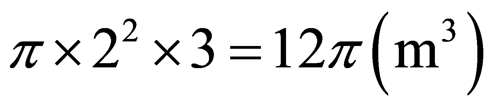
．故形成的几何体的体积是
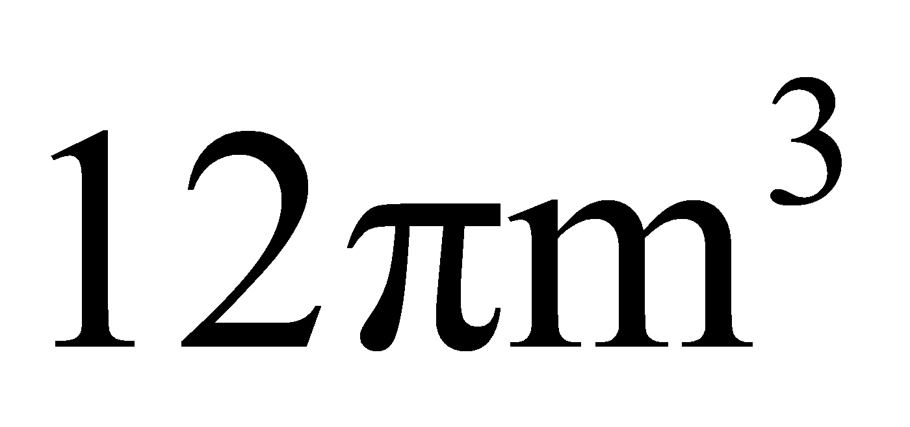
．【点睛】本题考查了圆柱的体积的求法，掌握圆柱的体积公式，能够正确得出圆柱的底面面积是解决问题的关键．
22．如图，是某几何体从三个方向分别看到的图形．

(1)说出这个几何体的名称；
(2)若图①的长为 ，宽为
，宽为 ；图②的宽为
；图②的宽为 ；图③直角三角形的斜边长为
；图③直角三角形的斜边长为 ，试求这个几何体的所有棱长的和是多少？它的侧面积多大？
，试求这个几何体的所有棱长的和是多少？它的侧面积多大？
【答案】(1)三棱柱
(2)棱长和为
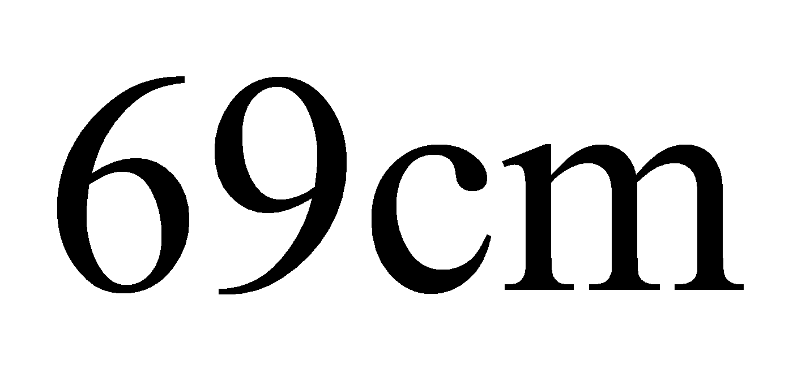
，侧面积为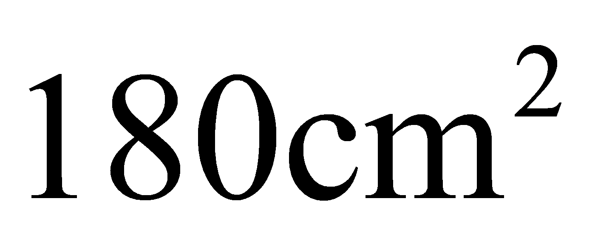
【分析】本题考查了由三视图判断几何体的形状以及几何体的展开图等知识，正确得出物体的形状是解题的关键．
（1）直接利用三视图可得出几何体的形状；
（2）利用已知各棱长分别得出所有棱长的和以及它的侧面积．
【详解】（1）解：这个几何体为三棱柱；
（2）棱长和为 ，
，
侧面积为
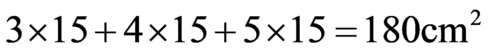
．23．下列图形中，图（a）是正方体木块，把它切去一块，得到如图（b）（c）（d）（e）的木块．

(1)我们知道，图（a）（b）的相关数据已经给出，请你将图（c），（d），（e）中木块的顶点数，棱数，面数填入表：
图号 | 顶点数x | 棱数y | 面数z |
（a） | 8 | 12 | 6 |
（b） | 6 | 9 |
|
（c） |
|
|
|
（d） |
|
|
|
（e） |
|
|
|
(2)如表，各种木块的顶点数，棱数，面数之间的数量关系可以归纳出一定的规律，请你试写出顶点数，棱数，面数之间的数量关系式．
【答案】(1)5，8，12，6，8，13，7，10，15，7
(2)
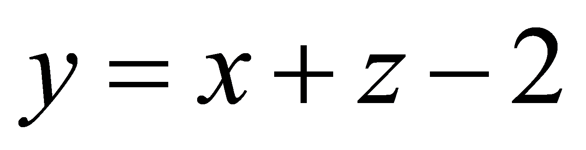
【分析】本题考查了截一个几何体，规律型：数字变化类．
（1）只要将图（b）、（c）、（d）、（e）各个木块的顶点数、棱数、面数数一下即可；
（2）通过观察找出每个图中“顶点数、棱数、面数”之间隐藏着的数量关系，这个数量关系用公式表示出来即可．
【详解】（1）解：见表：
图号 | 顶点数x | 棱数y | 面数z |
（a） | 8 | 12 | 6 |
（b） | 6 | 9 | 5 |
（c） | 8 | 12 | 6 |
（d） | 8 | 13 | 7 |
（e） | 10 | 15 | 7 |
故答案为：5，8，12，6，8，13，7，10，15，7；
（2）解：观察上表可得：
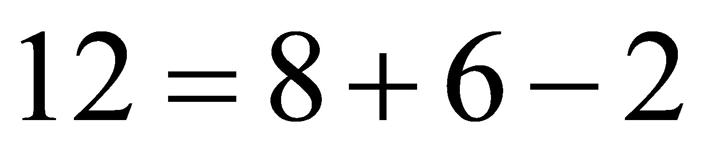
，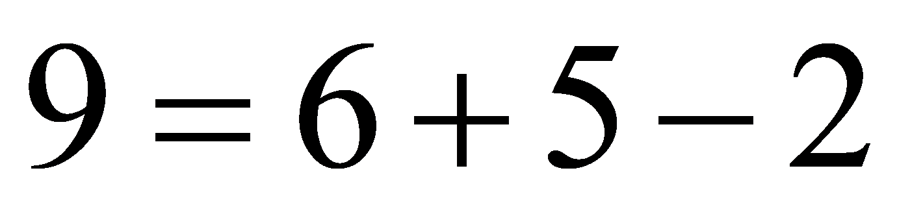
，，
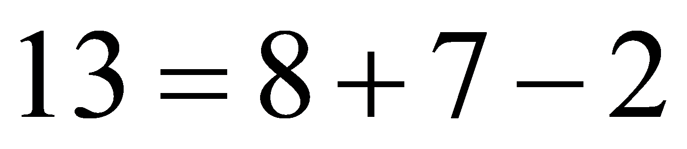
，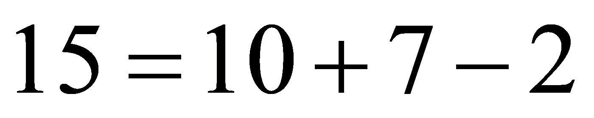
，∴，
∴顶点数x、棱数y、面数z之间的数量关系式为．
24．如图1，一个不透明小立方体的六个面上分别标有数字1，2，3，4，5，6．
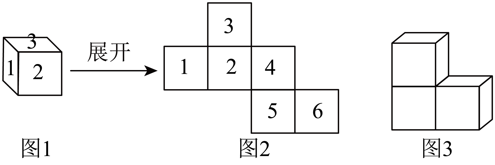
(1)若其展开图如图2所示，则：与数字“1”相对的面上的数字是________，与数字“2”相对的面上的数字是________，与数字“3”相对的面上的数字是________；
(2)将三个同样的小立方体搭成图3所示的几何体，请确定该几何体能看得到的面上数字之和最小为多少？
【答案】(1)4，6，5
(2)32
【分析】本题考查了正方体相对两个面上的文字，掌握正方体表面展开图的“相间、 端是对面”是解题的关键．
端是对面”是解题的关键．
（1）根据正方体表面展开图的“相间、端是对面”可得答案；
（2）分别求出最右边的正方体、最上边的正方体、左下角的正方体所能看到的数字之和最小的情况即可．
【详解】（1）解：根据正方体表面展开图的“相间、端是对面”可知，
“1”与“4”，“2”与“6”，“3”与“5”是对面，
故答案为：4，6，5；
（2）由（1）知“1”与“4”，“2”与“6”，“3”与“5”相对，要使图3中的几何体能看得到的面上数字之和最小，最右边的那个正方体所能看到的4个面的数字为1、4、2、3，
最上边的那个正方体所能看到的5个面的数字为1、2、3、4、5，
左下角的那个正方体所能看到的3个面的数字为1、4、2，
所以该几何体能看得到的面上数字之和最小为
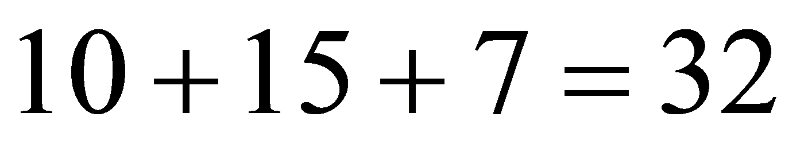
．25．某班综合实践小组开展“制作长方体形纸盒”的实践活动．
【知识准备】
下列图形中，可能是无盖正方体的表面展开图的有________；（只填序号）
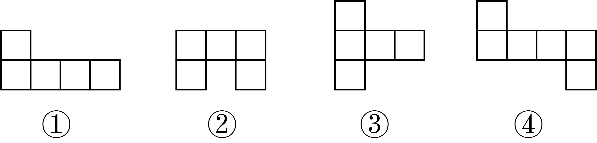
【制作纸盒】
综合实践小组利用边长为 的正方形纸板，按以下两种方式制作长方体形盒子．
的正方形纸板，按以下两种方式制作长方体形盒子．
如图⑤，先在纸板四角剪去四个同样大小边长为的小正方形，再沿虚线折合起来，可制作一个无盖长方体形盒子．如图⑥，先在纸板四角剪去两个同样大小边长为的小正方形和两个同样大小的小长方形，再沿虚线折合起来，可制作一个有盖的长方体形盒子，则制作成的无盖盒子的体积是有盖盒子体积的______倍；
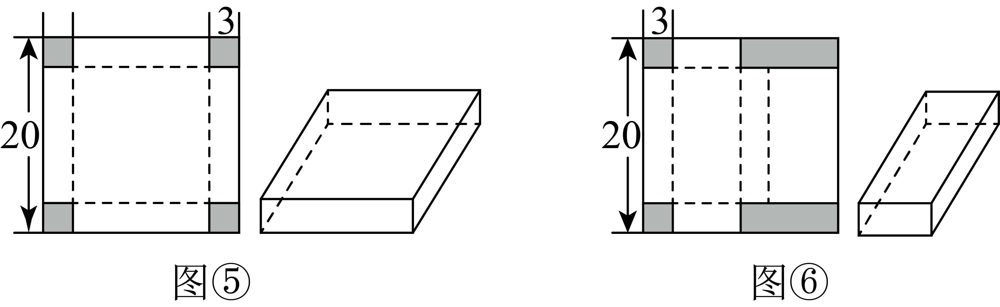
【拓展探究】
若有盖长方体形盒子的长、宽、高分别为 ，将它的表面沿某些棱剪开，展成一个平面图形，则该长方体形盒子表面展开图的外围周长最小为________
，将它的表面沿某些棱剪开，展成一个平面图形，则该长方体形盒子表面展开图的外围周长最小为________ ．
．
【答案】（1）①③；（2）2；（3）50
【分析】本题考查了正方体和长方体的表面展开图，长方体的体积，解题的关键是掌握正方体的展开图的11种情况，长方体的体积公式．
（1）根据正方体的展开图有11种情况：1−4−1型共6种，1−3−2型共3种，2−2−2型一种，3−3型一种，再根据无盖正方体只有5个面，找出答案即可；
（2）根据图形，分别求出有盖和无盖盒子的长宽高，根据长方体的体积公式，求出两个盒子体积，即可解答；
（3）根据题意，画出该长方体表面展开图，使长度为的边最少，的边其次，的边最多，即可解答．
【详解】解：（1）根据题意可得：可能是无盖正方体的表面展开图的有①③，
故答案为：①③；
（2）无盖长方体形盒子的长为
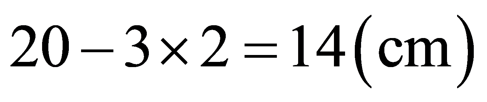
，无盖长方体形盒子的宽为，
无盖长方体形盒子的高为，
无盖长方体形盒子的体积为
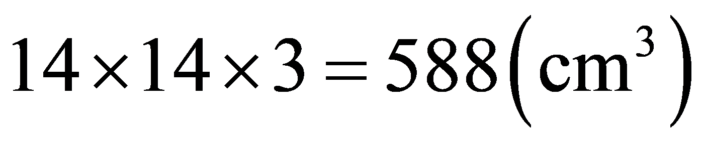
，有盖长方体形盒子长为，
有盖长方体形盒子宽为
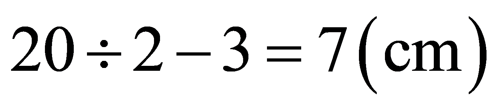
，有盖长方体形盒子高为，
有盖长方体形盒子的体积为
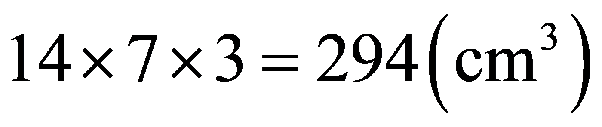
，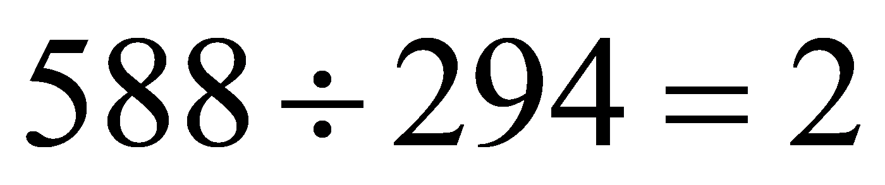
，故答案为：2；
（3）当该长方体形盒子表面展开图如图所示时，表面展开图的外围周长最小，
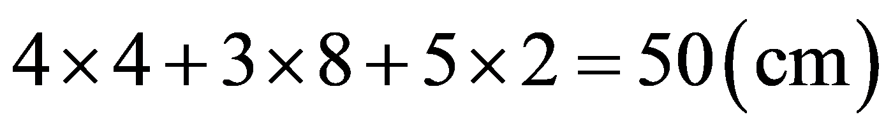
，故答案为：50．
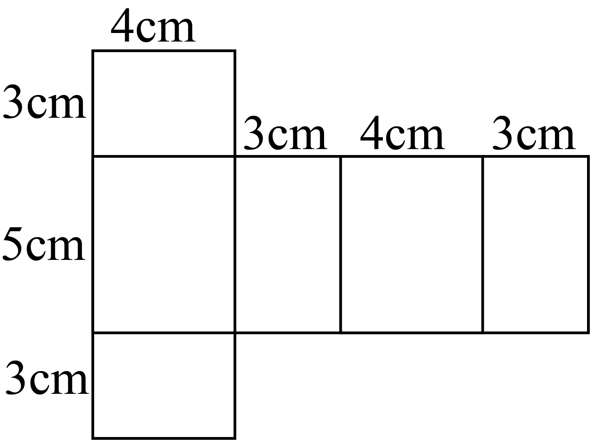